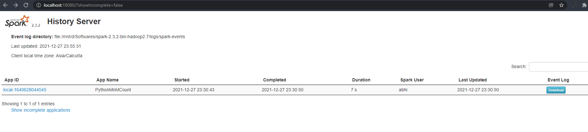

Enabling the Spark History Server on Spark Standalone¶
I’ve been using Spark for close to 2 years now but because I’ve always used it largely on clusters at work, I’ve never really had to struggle with the minutae of enabling monitoring pages like the Spark History Server UI etc.
Now that I’m exploring some advanced concepts in Spark, one of the first things I learnt was enabling the Spark History Server locally i.e on a Standalone installation.
Let’s assume that our Spark installation’s version is 2.3.2 and we’ve extracted the binary into /opt/spark-2.3.2-bin-hadoop2.7.
By the name itself, it’s evident that the Spark History Server is a…server. In that, it can be served as a webapp of its own and can be accessed at a particular port. It can be served from the sbin folder of spark-2.3.2-bin-hadoop2.7. But before we can do this, a couple of config values need to be set.
In
/opt/spark-2.3.2-bin-hadoop2.7/conf, we initially have a spark-defaults.conf.template. Make a copy of that and rename it an actual config file like so -
cp spark-defaults.conf.template spark-defaults.conf
Next we’ll create a folder called “spark-events” in a folder where we want to store the logs of the spark jobs we’ll be executing. In this case, that folder is
/opt/spark-2.3.2/logs/. Now/opt/spark-2.3.2-bin-hadoop2.7/logs/spark-eventsis in place.Next we’ll go back to the
spark-defaults.conffile we created and add three lines in it -
spark.eventLog.enabled true
spark.eventLog.dir file:/opt/spark-2.3.2-bin-hadoop2.7/logs/spark-events
spark.history.fs.logDirectory file:/opt/Softwares/spark-2.3.2-bin-hadoop2.7/logs/spark-events
Finally, we start the spark-history-server as
/opt/spark-2.3.2-bin-hadoop-2.7/sbin/start-history-server.shAny errors occurring in this process can be looked up in the history server logs under the new logs folder we just created.
It can be accessed at localhost:18080 and it should look like this -
